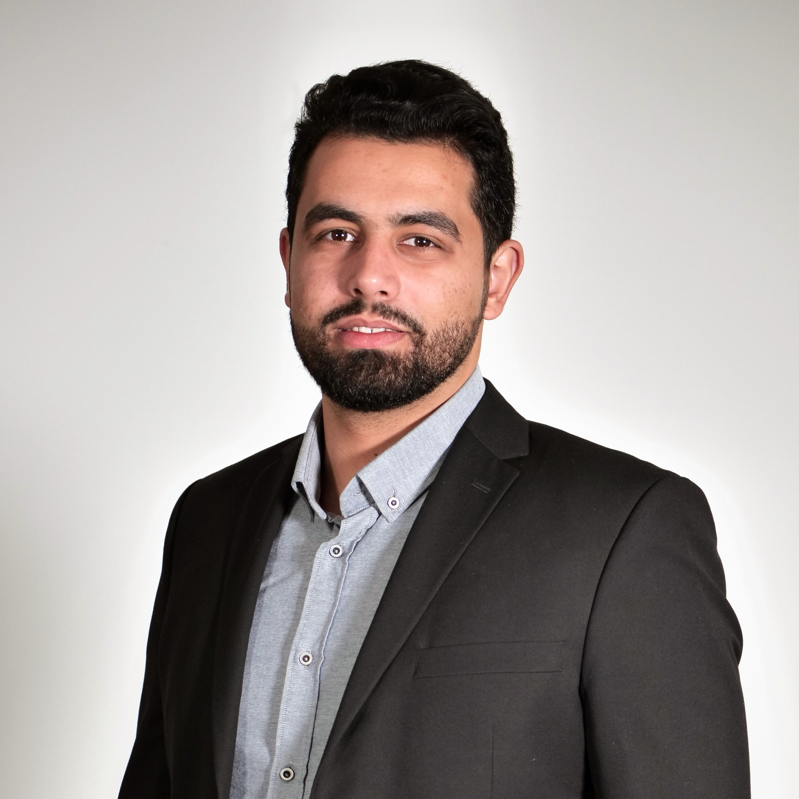

Osama Radwan
A passionate software engineer seeking to boost his skills and
knowledge by helping build great software products.
Technical Solution Engineer at
Monty Mobile.
📧 osamaradwan46@gmail.com
Tech stack
JavaScript, NodeJS, Angular, React, Express
Python, Django, Flask
Git, UBUNTU, Web APIs,
MySQL, MongoDB, Postgres
PHP, Laravel
Dart, Flutter
HTML/CSS3, Bootstrap
C#, ASP.NET Core
Work History | Internships
🚧 Solution Engineer | Software Engineer
Monty Mobile, Beirut, Lebanon
05/2021 - Present
Monty Mobile is a VAS & telecom solutions provider , working to
facilitate the international flow of Voice and SMS across global
markets.
-
Implementation and maintenance of multiple projects provided by
Business Analysis team (Front-end and Back-end).
-
Converted data found on Excel sheets into one unified relational
MySQL Database Schema.
- Providing the Customer Success team with data when needed.
🚧 Backend Developer | Mobile Developer
MMServices, Saida, Lebanon
08/2018 - Present
An Android application for mobile store dealers in the Lebanese
market which sells mobile recharge cards, units, and online gift
cards.
-
Worked on the backend of the MMServices application server that
handles the operations for sending dollars and days to touch and
alfa mobile numbers from the MMService application.
-
Built an Android mobile application that shows the prices of
phones available in the Lebanese market and allows the user to
order through WhatsApp.
🚧 Full-Stack Web Developer
Lebanon Field Office - UNRWA, Beirut, Lebanon
09/2019 - 03/2020
United Nations Relief and Works Agency for Palestine Refugees in the
Near East
-
Created a Point of Sale system using ASP.NET (Entity Framework).
-
Worked on a web application project that manages flight and hotel
reservations for UNRWA staff using ASP.NET (Entity Framework).
-
Worked on quality assurance for the E-Health web application used
by the UNRWA Health Department.
🚧 Full-Stack Web Developer | Bootcamp
SE Factory, Beirut, Lebanon
05/2018 - 10/2018
Intensive full stack web development program covering cloud
architecture, front and back-end development, source control, and
web application security
-
Ran through programming fundementals like data structures,
algorithms, object oriented programming, programming language
concepts, etc...
-
Developed knowledge in back-end web development by working on
small projects using Laravel (PHP)
-
Learned non-technical soft skills (communication skills, time
management, creative thinking, team work, conflict resolution,
presentation, business etiquette, project management, leadership,
and personal finance )
🚧 Back-End Web Developer | Intern
Lebanon Field Office - UNRWA, Beirut, Lebanon
12/2017 - 05/2018
United Nations Relief and Works Agency for Palestine Refugees in the
Near East
- Developed knowledge in back-end web development using PHP.
-
Created a registration system for schools using WAMP and
Bootstrap.